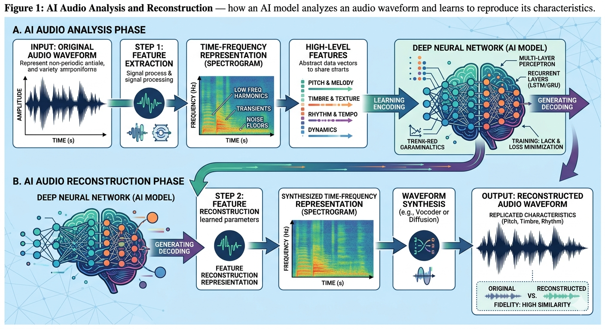
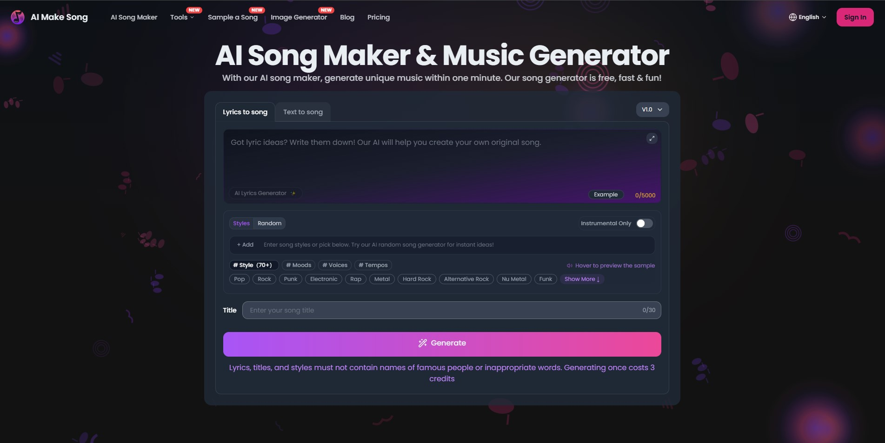

You may never have seen a deepfake video — but you may have already heard a cloned voice without knowing it. AI audio generation has advanced to the point where a voice can be replicated from just a few seconds of sample audio, and AI music tools can compose entire songs in any style on demand. The implications for trust, identity, and media are profound.
What Is AI Audio Generation?
AI audio generation refers to the use of artificial intelligence to create sound — whether that is a human voice, music, sound effects, or ambient audio. Like image and video generation, audio generation relies on deep learning models trained on large datasets of existing audio content. The model learns the patterns, textures, and structures of sound, and uses that knowledge to generate new audio that was never recorded by a real microphone.
There are three main categories of AI audio generation: voice cloning and synthesis, AI music generation, and general sound design. Each uses slightly different techniques but all share the same foundational principles of deep learning and pattern recognition.

How Voice Cloning Works
Voice cloning is the process of training an AI model to replicate a specific person's voice — including their accent, tone, speaking rhythm, and emotional inflections. The process typically begins by feeding the model a sample of the target voice. This can be as little as a few seconds of recorded speech, though longer samples produce more accurate results.
The model analyzes the unique acoustic characteristics of the voice — the frequency patterns, breath sounds, pitch variation, and microphone characteristics — and learns to reproduce them. Once trained, the model can then generate new speech in that voice, saying anything the user inputs as text. This is essentially a combination of voice cloning and text-to-speech technology.
Sample Collection
A short recording of the target voice is captured — this can come from a phone call, video, or public speech.
Feature Extraction
The AI analyzes the voice's unique acoustic features — pitch, rhythm, tone, and breathing patterns.
Model Training
A voice model is fine-tuned on the extracted features to learn how to replicate that specific voice.
Speech Synthesis
The trained model generates new speech in the cloned voice based on any text input by the user.
Modern voice cloning tools can clone a voice from as little as three seconds of audio. This means any publicly available recording — a voicemail, a social media video, a podcast appearance — could potentially be used to clone someone's voice without their knowledge or consent.
How AI Generates Music
AI music generation works by training models on vast libraries of music — across genres, instruments, tempos, and structures. The model learns the patterns that make music sound coherent and pleasing: chord progressions, melodic development, rhythmic patterns, and how different instruments interact with one another. Given a prompt — such as "an upbeat jazz piano piece in the style of the 1950s" — the model generates original audio that matches those parameters.
Tools like Suno, Udio, and Google's MusicLM have made AI music generation accessible to anyone. Users can generate full songs, complete with vocals, instrumentation, and lyrics, simply by describing what they want. The music produced is original — it is not a remix or a copy of an existing song, but a new composition generated by the model from scratch.

Text-to-Speech Technology
Text-to-speech (TTS) is one of the most widely deployed forms of AI audio generation, and it is already part of everyday life — in virtual assistants, navigation apps, and accessibility tools. Modern AI TTS systems go far beyond robotic-sounding voices. They produce natural, expressive speech that varies in tone, pacing, and emotion based on the content of the text.
Advanced TTS systems can be fine-tuned on a specific person's voice to produce cloned speech, or they can be used with a neutral synthetic voice. The technology is now so advanced that in many cases, listeners cannot reliably distinguish AI-generated speech from a real human recording.
We are entering an era where hearing a voice is no longer sufficient proof that a real person said something. Audio, like images, can no longer be taken at face value.
— Audio Forensics and Media Authentication ResearchHow to Spot AI-Generated Audio
Identifying AI-generated audio is becoming increasingly difficult, but there are still some signs to listen for:
- Unnatural pauses or an overly consistent speaking rhythm with no variation
- Absence of natural background noise, breathing sounds, or ambient audio
- Slight distortion or a metallic quality in the voice, especially on certain consonants
- Emotion that sounds flat or slightly mismatched to the content
- Music that lacks the subtle imperfections of live performance
- Voice that sounds slightly "too perfect" — no hesitation, no verbal fillers
Risks and Misuse
The misuse of AI audio generation is already causing real harm. Voice cloning has been used in phone scams where fraudsters impersonate family members in distress to extract money from victims. Cloned voices of political figures have been used to spread false statements. Synthetic audio has been used to fabricate evidence in legal disputes and to create non-consensual recordings.
In the music industry, AI has been used to clone the voices of famous artists and release unauthorized music in their style or with their cloned voice — raising serious questions about intellectual property, consent, and artistic identity. These issues are being actively debated by musicians, legislators, and AI developers worldwide.
If you receive an unexpected phone call or voice message from someone you know asking for money or personal information, verify their identity through a different channel before acting. Voice cloning scams are increasingly common and convincing.
What We've Learned
AI audio generation encompasses voice cloning, music generation, and text-to-speech synthesis. Each relies on deep learning models trained on large audio datasets, and each has legitimate uses as well as serious misuse potential. Voice cloning in particular has advanced to the point where only a few seconds of source audio are needed to replicate a person's voice convincingly.
While AI-generated audio still carries identifiable signs — such as unnatural rhythm, absent ambient noise, and flat emotion — these artifacts are becoming rarer and harder to detect. Developing an awareness of these signs, and maintaining a healthy skepticism toward audio content you did not expect, are essential habits in a world where synthetic sound is becoming indistinguishable from the real thing.
Hearing is no longer believing. AI can replicate any voice from a tiny sample of audio, making it critical to verify the source of any audio content before trusting or sharing it.